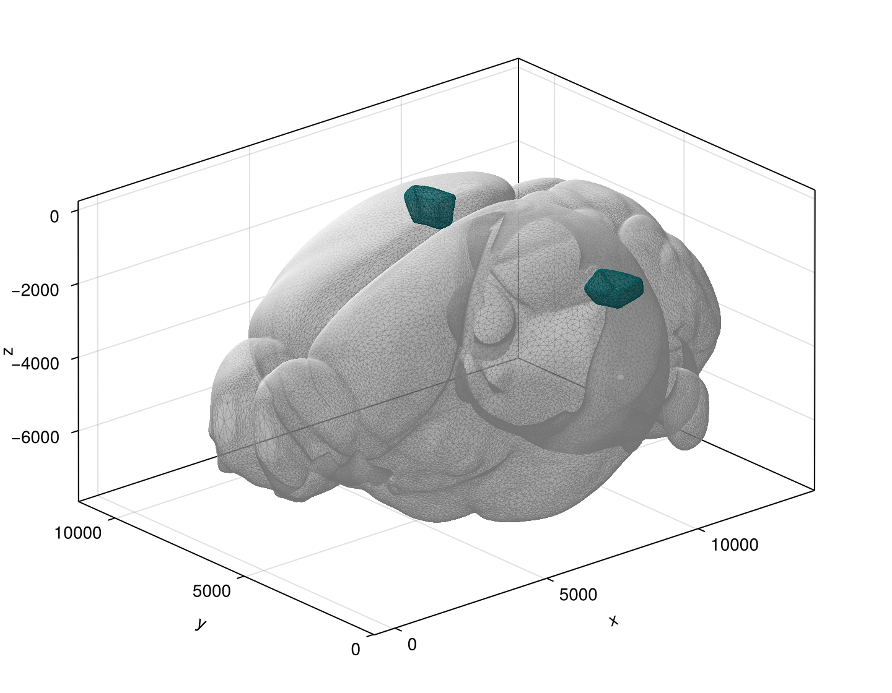
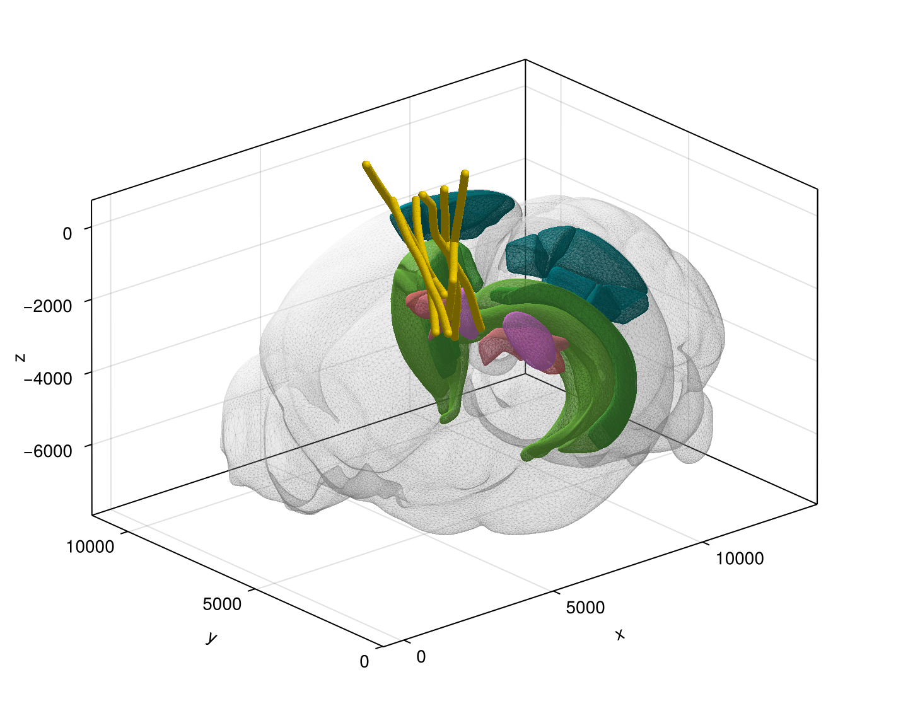

AllenNeuropixels
AllenNeuropixels.jl is a Julia package for loading, analyzing, and visualizing data from the Allen Neuropixels mouse electrophysiology datasets (Visual Coding and Visual Behavior).
Features
- Load, filter, and partition LFP and spike-band data (see AllenNeuropixelsBase.jl)
- Calculate channel and unit depths (along the probe length, or along atlas streamlines)
- ICA, PCA, CCA, spectral (including FOOOF), wavelet, and burst-based analysis
- Visualize spike rasters, wavelet spectrograms, burst masks, and 3D renders of the mouse reference atlas (including probe locations)
Examples
Below we provide some basic examples for Visual Coding dataset.
Installing and initializing
To install AllenNeuropixels.jl and set a custom directory for data downloads (the default is a scratchspace):
using Pkg
Pkg.add("AllenNeuropixels") # Please see the AllenSDK.jl readme for any python-related troubles
import AllenNeuropixels as AN
AN.setdatadir("~/Downloads/AllenNeuropixelsData/") # Then restart JuliaListing sessions
The dataset is divided into recording sessions, each with a unique ID. Sessions last for about 3 hours and follow standardized stimulus templates. One mouse can have multiple recording sessions. To access the session table (containing metadata such as session id, session type, mouse age, genotype, etc.) and select a session by id:
seshtable = AN.getsessiontable() # Or AN.VisualBehavior.getsessiontable() for the Visual Behavior dataset
sessionid = seshtable[1, :id]
session = AN.Session(sessionid) # This can take a few momentsAn instance of the AN.Session type holds the python objects for a given session that interface with the AllenSDK.
Querying probes, channels, epochs, and stimuli
The recording for each session are made synchronously across six probes, each with hundreds of channels. To retrieve the probe metadata, channel metadata, and stimulus metadata for a given AN.Session:
probes = AN.getprobes(session) # Can also be AN.getprobes() to list all probes in the Visual Coding dataset
channels = AN.getchannels(session) # Or AN.getchannels()
epochs = AN.getepochs(session) # A Dataframe of stimulus epoch metadata
stimuli = AN.getstimuli(session) # A Dataframe for individual stimulus presentationsLoading LFP data
To load the LFP data for a particular session, during a particular stimulus epoch (see epochs.stimulus_name), for channels in a particular brain region (structure; see channels.ecephys_structure_acronym):
LFP = AN.formatlfp(session; stimulus="flashes", structure="VISl")This will return a TimeSeries containing LFP data with (rectified) timestamps and channel ids. The raw LFP (with original timestamps) can be accessed using AN.getlfp. To calculate depths for the LFP channels:
using TimeseriesTools
channelids = lookup(LFP, Chan)
probedepths = AN.getchanneldepths(session, channelids; method=:probe) # From the cortical surface along probe depths (μm)
streamlinedepths = AN.getchanneldepths(session, channelids; method=:streamlines) # Along streamlines (%)Loading spike data
To load a dictionary of spike times for a given session and structure, use:
spikes = AN.getspiketimes(session, "VISl")
probeid = TimeseriesTools.metadata(LFP)[:probeid]
spikedepths = AN.getunitdepths(session, probeid, keys(spikes); method=:streamlines)These spikes trains can then be aligned to different stimuli using information from the metadata tables above.
Plotting
With Makie loaded, you can access the plotting utilites (src/Plots/). For example, you can plot the CCFv3 structure meshes with:
using CairoMakie
D = AN.getstructureidmap()
root = D["root"] # The whole brain
VISl = D["VISl"] # One structure
f = Figure(; size = (720, 560))
ax = Axis3(f[1, 1]; aspect = :data)
p = AN.Plots.plotbrainstructure!(ax, root; hemisphere=:both)
p = AN.Plots.plotbrainstructure!(ax, VISl; hemisphere=:both)
f Or, for a more complete plot, with the Neuropixels probes:
f = Figure(; size = (720, 560))
ax = Axis3(f[1, 1]; aspect = :data)
p = AN.Plots.plotbrain!(ax, session; hemisphere=:both, dotext=false)
f